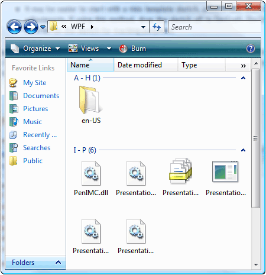

title: Grid Control Pattern description: Describes guidelines and conventions for implementing IGridProvider, including information about properties and methods. The Grid control pattern is used to support controls that act as containers for a collection of child elements. ms.assetid: c50fb6f7-884a-4147-a6b2-c59d787fc04b keywords:
Describes guidelines and conventions for implementing IGridProvider, including information about properties and methods. The Grid control pattern is used to support controls that act as containers for a collection of child elements.
The children of this element must implement IGridItemProvider and be organized in a two-dimensional logical coordinate system that can be traversed by row and column. For examples of controls that implement this control pattern, see Control Types and Their Supported Control Patterns.
This topic contains the following sections.
When implementing the Grid control pattern, note the following guidelines and conventions:
Grid coordinates are zero-based with the upper left (or upper right cell depending on locale) having coordinates (0,0).
If a cell is empty, a Microsoft UI Automation element must still be returned in order to support the IGridItemProvider::ContainingGrid property for that cell. This is possible when the layout of child elements in the grid is similar to a ragged array (see example below).

A grid with a single item is still required to implement IGridProvider if it is logically considered to be a grid. The number of child items in the grid is immaterial.
Hidden rows and columns, depending on the provider implementation, may be loaded in the UI Automation tree and will therefore be reflected in the IGridProvider::RowCount and ColumnCount properties. If the hidden rows and columns have not yet been loaded, they should not be counted.
IGridProvider does not enable active manipulation of a grid; ITransformProvider must be implemented to enable this functionality.
Use a IUIAutomationStructureChangedEventHandler to listen for structural or layout changes to the grid such as cells that have been added, removed, or merged.
Use a IUIAutomationFocusChangedEventHandler to track traversal through the items or cells of a grid.
The following properties and methods are required for implementing the IGridProvider interface.
| Required members | Member type | Notes |
|---|---|---|
| RowCount | Property | None |
| ColumnCount | Property | None |
| GetItem | Method | None |
Â
This control pattern has no associated events.
Control Types and Their Supported Control Patterns
UI Automation Control Patterns Overview
Â
Â